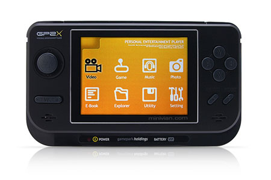

Virtual Joystick
sdlBasicがジョイスティクを検知しない場合キーボードでエミュレートします。
Keys
ジョイスティック Virtual joystick ergonomy is based upon the GP2X handheld device.
Here a picture of the device.

direction are emulated by arrow keys or, in alternative, the keys on numeric
pad.
left and right shift keys emulates the two front buttons
Keys A S D F emulate buttons A B X Y
Page Up and Down are used to emulate volume buttons
Select and Start are emulated using Keys ? ?